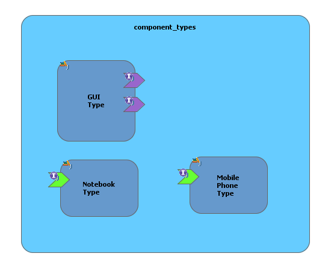
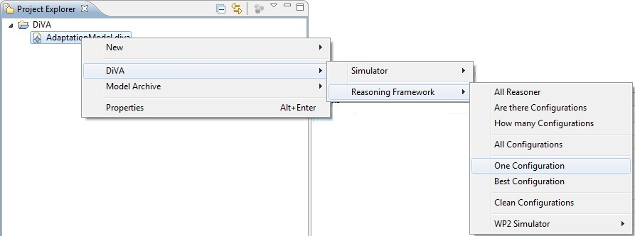

This practice describes the tasks of the DiVA tool-supported methodology related to preparing and deploying the runtime. These tasks leverage the design-models of the runtime architecture in order to drive and fully automate the adaptation process consists of three tasks below:
i) Task one involves an initial step of checking the component types defined by the architect. Once consistent, code skeletons are automatically generated. Note that the business logic of the components still has to be implemented by the case study providers using classic software engineering methodology. Indeed, DiVA considers components as black boxes.
ii) Task two involves the steps of choosing a testing strategy and a reasoner, testing the adaptation model with these and, finally, selecting a reasoner or set of reasoners. At first a testing strategy has to be chosen which fits to system’s reasoning behaviour. Then, a reasoner has to be chosen, which is applied to the chosen testing strategy. Then the DiVA Adaptation Model is tested by reasoning on it with several context instances. If there are no more reasoners and testing strategies available or all reasoners and strategies of interest were applied the best reasoner or a set of reasoners can finally be selected by comparing all results of the testing.
iii) Task three involves configuring DiVA@Runtime before the initial deployment. Then the bootstrap component is deployed. This component will in turn deploy all the DiVA components needed to achieve dynamic adaptation (reasoner, checker, causal link, weaver). Finally, all the factories (component types) have to be deployed on the (OSGi) platform. The adaptation loop (reasoning, validation, weaving and (re)configuration) will start as soon as a context model is provided to the reasoner.
Each of these tasks is detailed below.
Description
Here, we leverage these models to generate some code related to these component types. As a reminder, a component type is basically a factory for building component instances. It describes the services that are offered and required by all the instances conforming to this component type. The identification and design of the component types are performed by the business experts and the architects of the system following classic software engineering techniques.
How-to
We use the SCA (Service Component Architecture,
see http://www.eclipse.org/stp/sca/) editor to define the component
types of a DiVA system. This diagram only contains
components, with no bindings. These
components mainly specify their required and provided port as well as some
pieces of information that make it possible to generate some code targeting the
OSGi runtime.
All the component types should contain the information illustrated in the figure below:
Each <component> must fill the following fields:
Each <implementationJava> must declare:
Each <service>
(provided port) should simply declare a name.
Each <reference> (required
port) should also declare a name,
and:
Each <interfaceJava> (associated to provided and required ports) should declare:
CRM
example application
The figure below illustrates a snippet of the diagram describing the component types of the CAS system. The Notebook Type and the Mobile Phone Type respectively offer one service. The GUI Type requires these two services.

Description
This task details how to generate code skeleton from the component types, for the OSGi runtime. In DiVA, we are particularly interested in OSGi since both the case study providers use an OSGi runtime using
· Equinox, the OSGi runtime developed by Eclipse (see http://www.eclipse.org/equinox/).
· ServiceMix (see http://servicemix.apache.org) , an open-source ESB (Enterprise Service Bus) by the Apache foundation, based on the Felix/Karaf OSGi runtime (see http://felix.apache.org/site/apache-felix-karaf.html).
The basic idea of this task is to generate OSGi factories that are able to instantiate DiVA components (components that can be dynamically managed by DiVA).
How-to
We have extended the SCA editor with code generation facilities and constraints checking. Using the SCA editor (see the Figure below), it is possible to generate all the OSGi factories corresponding to the component types defined in the diagram. It is also possible to generate the factory of one particular component type. Before actually generating the code of the OSGi factories, we check that all the information is available so that the code generator can actually produce the code. In the case the model is not valid, a clear report is displayed to the user, who has to make some corrections.
The code generation produces one Java project (OSGi bundle) per component type. Each project has the following structure:
For each provided port, we simply implement the corresponding Java interface. For each required port, we generate the corresponding references and associated setters, which should not be modified:
CRM
example application
The figure below illustrates the code generated from the previously presented SCA diagram. In particular, it illustrates the main class of the GUI component. This component simply implements the DiVAComponentOSGi interface, so that it can be managed by DiVA. It offers no service. However, if it would have offered some services, this class would implement all the corresponding interfaces. This component requires the mobile phone and the notebook services. We thus generate the corresponding references and setters.
DiVA@Runtime proposes two ways for representing component instances at runtime:
The factories (component types) are able to produce instances of both forms. Indeed, to create a component instance as an OSGi bundle, we first use the factory to create an in-memory object, which is then encapsulated as an OSGi bundle.
Encapsulating a component instance as an OSGi bundle makes this component more “visible” from the outside: it appears in the OSGi console, it can more easily be exposed to external services, etc. However, generating this bundle has a cost: code generation (MANIFEST and Activator), compilation and packaging of the bundle should be performed at runtime. It is thus recommended to use in-memory objects for session components, which lead to multiple instances of the same component types.
It is important to note that:
Description
An important part of developing an adaptive system is to select a good reasoner and reasoning strategy. The adaptation reasoning framework provides reasoning on the adaptation model to get valid configurations for a given context scenario. In DiVA the reasoning framework consists of several different reasoners, which can be used individually or in combination depending on the needs of the system. The framework uses one or multiple reasoners to get one configuration or sets of configurations depending on the reasoning request. Design-time testing of the adaptation model helps to select one or a set of reasoners to use for runtime reasoning. The reasoning framework consists of the following reasoners:
· Alloy SAT Reasoner. Alloy is a structural modelling language based on first-order logic, for expressing complex structural constraints and behaviour. The Alloy Analyzer is a constraint solver that provides fully automatic simulation and checking. It is, technically speaking, a “model finder”. Given a logical formula (in Alloy), it attempts to find a model -- a binding of the variables to values -- that makes the formula true.
Alloy in its current release is based on Kodkod, which in turn uses different well known open source SAT solvers (e.g., SAT4J, zChaff or MiniSAT). This reasoning engine performs its task "perfect" in the way of delivering always (given enough time) the optimal result. But the Alloy SAT Reasoner offers also the possibility of “Any-Time” reasoning, because it delivers all configurations one after another. Thus reasoning can be stopped after receiving a number of configurations or meeting a deadline.
· Random Reasoning Engine. The random reasoning engine relies on a combination of a random pre-selection of a partial configuration and a check whether this partial configuration leads to a valid configuration. It uses a second reasoning engine, which offers checking for this purpose. At this time DiVA random reasoning uses the Alloy SAT solver to check the validity of found configurations.
This engine acts as an optimiser by trying to reduce reasoning time by reducing the configuration space. This is done by randomly selecting or excluding variants from the adaptation model, which are part or not part of a partial configuration. After selecting or excluding variants randomly the partial configuration is checked against the adaptation rules by the second reasoning engine. If the partial configuration is satisfiable, further variants are randomly selected or excluded in order to reduce more the configuration space. Again this partial configuration is checked by the second reasoning engine. Randomly selecting and excluding stops and a new initial partial configuration is used, if no more variants are available.
The selection is not totally random but uses a simplified decision tree, which is derived directly from the adaptation model structure without considering constraints between context and variant elements. It randomly selects a valid set elements from the decision tree since this is a very “cheap” operation with O(n). The second reasoning engine then takes the constraint into account as well.
· Random Configuration Reasoner. The Random Configuration Reasoner uses the random reasoning engine in order to work on single partial configurations. It checks these partial configurations regarding satisfiability with the help of the second reasoning engine. The Alloy SAT Solver checks a partial configuration by completing it and finding at least one valid configuration. Surely, this valid configuration is used as a result of the Random Configuration Reasoner.
· Random Path Reasoner. The Random Path Reasoner uses the random reasoning engine in order to work on a configuration path starting with a single partial configuration. Because the Alloy SAT Solver is used as second reasoning engine, checking such partial configuration is done by finding or solving at least one valid configuration. In that case all possible valid configurations are at one go solved for that path and are part of the result, which is delivered by the Random Path Reasoner.
How-to
The adaptation reasoning framework offers two possible strategies to test the adaptation model at design-time. These testing strategies are mapped on reasoning requests, which are used at runtime. The first strategy (“One Configuration”) is described by a reasoning request in order to get one (the first) configuration as fast as possible. The second strategy (“Best Configuration”) is to get the best configuration within a defined amount of time. Of course all mentioned reasoners support both reasoning requests at design-time as well as at runtime which allows predicting run-time performance at design-time.
To get one configuration, the framework starts reasoning on the adaptation model and stops after receiving one configuration. This strategy allows getting a valid configuration as fast as possible. The figure below the menu path in the DiVA studio to forward the appropriate reasoning request to the adaptation reasoning framework.

The reasoning request can be parameterised. At first no timeout is needed but logging has to be enabled to be able to compare reasoning of the several reasoners afterwards. Therefore one reasoner has to be chosen as shown in the figure below. This testing strategy has to be applied for all available reasoners.
After choosing a reasoner the testing of the adaptation model can be started. Afterwards the reasoning result logging will be presented to the developer.
The second strategy (getting the best configuration) means starting reasoning on the adaptation model, receiving one configuration after another, ranking them and stopping after matching a deadline. This strategy allows getting a valid configuration, which is the best which can be found within a defined amount of time. The figure below shows the menu path in the DiVA studio to forward the appropriate reasoning request to the adaptation reasoning framework.
Also this reasoning request can be parameterised. At first the timeout is set to e.g., 2 seconds but no logging is needed. As also shown in the figure below one reasoner has to be selected. This testing strategy has to be applied for all available reasoners in order to compare them afterwards. The Alloy SAT Reasoner, the Random Configuration Reasoner and the Random Path Reasoner are available for this reasoning request.
After choosing a reasoner the testing of the adaptation model can be started. Afterwards the reasoning result will be presented to the developer.
As mentioned before the results of the two
testing strategies are presented to the developer. With the help of these
results all reasoners can be compared and the
developer can choose which reasoner will be used at
runtime. Below results of the Alloy SAT Reasoner and
the Random Configuration Reasoner are exemplarily
considered to show the comparison in common.
But the decision which reasoner should be selected cannot be generalised in order to be applicable for each adaptation model and each reasoning request. The decision depends on the adaptation model and the reasoning request. If another adaptation model is used a different reasoner may provide better performance and or result quality. But there can also be different decisions for the two testing strategies already, which correspond to the two reasoning request at runtime. Last but not least changing parameter such as timeout may also lead to a selection of a different reasoner.
CRM
example application – getting one configuration
The figure below shows the result of the Alloy SAT Reasoner after getting the first configuration. Reasoning was successful, because one configuration was found for each context instance. Because logging was enabled all reasoning times are presented to the developer. The time is the important issue for reasoner comparison of this testing strategy.
The figure below shows the result of the Random Configuration Reasoner after getting the first configuration. Reasoning was also successful, because one configuration was also found for each context instance. Also all reasoning times of the Random Configuration Reasoner are presented to the developer.
After getting all results of the reasoner a decision regarding getting the first configuration for runtime reasoning can be made. As shown above the reasoning was successful but the reasoning times differ. The Alloy SAT Reasoner was able to return the first configuration for each context instance faster than the Random Configuration Reasoner. Thus the Alloy SAT Reasoner should be used for reasoning at runtime in order to get the first configuration as fast as possible for the used adaptation model.
CRM
example application – getting best configuration
The figure below shows the result of the Alloy SAT Reasoner after getting the best configuration within 2 seconds. Reasoning was almost successful, but no configuration was found for context instance “C3”. All valid configurations with their scores are also presented in the “Simulation Output Viewer”. This score is the important information for reasoner comparison of this testing strategy.
The figure below shows the result of the Random Configuration Reasoner after getting the best configuration. Reasoning was also almost always successful, but no configuration was found for context instance “C1”. Also all valid configurations with their scores are presented in the “Simulation Output Viewer”.
After getting all results of the reasoner a decision regarding getting the best configuration for runtime reasoning can be made. As shown in the figures above easoning was not successful for each context instance within the timeout. The Alloy SAT Reasoner fails for context instance “C3” and the Random Configuration Reasoner fails for context instance “C1”. However, also the score of configurations differs for the same context instance except for context instance “C5” (281).
The Alloy SAT Reasoner returned a higher scored configuration for the context instances “C1” (400 versus none found), “C2” (220 versus 44) and “C6” (258 versus 226). But the Random Configuration Reasoner returned a higher scored configuration for the other context instances “C3” (36 versus none found), “C4” (197 versus 152) and “C7” (121 versus 37). Thus no reasoner wins the comparison and both should be used for reasoning at runtime in order to get the best configuration for the used adaptation model.
To properly configure the components of DiVA@Runtime, the following system properties must be set:
Description
This task describes how to deploy DiVA@Runtime. In other words, it explains how to deploy the DiVA components responsible for the dynamic adaptations of the business application.
In order to deploy the components of DiVA@Runtime, we use a bootstrap component, which basically is a causal link component i.e., a component of DiVA@Runtime. Instead of managing the business application, this bootstrap component is actually responsible for the initial deployment of DiVA@Runtime.
How-to
In order to deploy DiVA@Runtime, the user should simply define its architecture, using the architectural metamodel. In others words, he should decide which components he wants to use and how they are connected. This is an important feature of DiVA@Runtime, since it allows the user to very easily deploy different configurations of DiVA@Runtime. For example, if the user simply wants to test some pre-generated configurations, he does not have to deploy a reasoner or an aspect weaver. Instead, he can only deploy a causal link component.
CRM
example application
The bootstrap component (number 2 in the listing below) is configured by a system property called diva.bootstrap.model.uri, which specifies the path to an architectural model describing one possible configuration of DiVA@Runtime. In the case where no such property is specified, it opens a file chooser to let the user to choose such a configuration.
id State
Bundle
0 ACTIVE
org.eclipse.osgi_3.4.3.R34x_v20081215-1030
1 ACTIVE
eu.ict_diva.osgi.component.framework_1.0.0
2 ACTIVE eu.ict_diva.runtime.osgi.bootstrap_1.0.0
3 ACTIVE
eu.ict-diva.runtime.causallink_1.0.0
4 ACTIVE eu.ict_diva.runtime.causallink.osgi_1.0.0
5 ACTIVE eu.ict_diva.runtime.checker_1.0.0
6 ACTIVE
eu.ict_diva.runtime.causallink.osgi.GUI_1.0.0
7 ACTIVE org.kermeta.osgi.bundleFactory_1.0.0
8 ACTIVE org.kermeta.osgi.instanceFactory_1.0.0
When a configuration is specified, DiVA@Runtime is
automatically deployed: the reasoner, weaver, causal
link, checker, etc are deployed and connected as described in the model.
Description
The goal of this task is to deploy and set up all the components of DiVA@Runtime, as well as the factories (component types) of the business system so that the adaptive system can be seamlessly be managed by DiVA@Runtime.
How-to
The OSGi bundles corresponding to the factories/component types should be deployed like normal OSGi bundles (e.g., using an Equinox launch configuration if you are using Equinox within Eclipse).
CRM
example application
id State
Bundle
0 ACTIVE
org.eclipse.osgi_3.4.3.R34x_v20081215-1030
1 ACTIVE
eu.ict_diva.osgi.component.framework_1.0.0
...
8 ACTIVE
eu.ict_diva.tutorial.services_1.0.0
9 ACTIVE
eu.ict_diva.tutorial.osgi.type.GUI_1.0.0
10 ACTIVE
eu.ict_diva.tutorial.osgi.type.Notebook_1.0.0
11 ACTIVE
eu.ict_diva.tutorial.osgi.type.MobilePhone_1.0.0
When DiVA@Runtime is properly deployed and configured, and when all the business factories are present, it is possible to interact with DiVA@Runtime e.g., by passing a model of the context to the reasoner to compute and deploy a new configuration adapted to the context, or directly pass a configuration to the causal link to force the reconfiguration towards this configuration, etc. A detailed tutorial can be found at http://www.knopflerfish.org/osgi_service_tutorial.html.
All the DiVA components (from DiVA@Runtime or from the business system) that are encapsulated as OSGi bundles are registered into the OSGi service registry, as illustrated by the script below (the start method of the Activator).
public
void start(BundleContext context) {
...
cpt = fact.createComponent("$ComponentTypeJavaClass$");
Properties props = new Properties();
props.put("InstanceName", "$InstanceName$");
context.registerService(cpt.getClass().getName(), cpt,
props);
cpt.setInstanceName("$InstanceName$");
cpt.setContext(context);
}
It is thus possible to use the OSGi service registry to retrieve DiVA components, using the name of their implementing class, and their instance name.